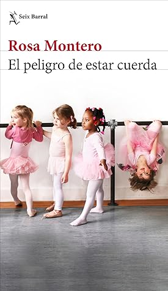

El peligro de estar cuerda
Reseña por Jorge I. Zuluaga

Ver reseña en GoodReads (necesita cuenta)
Tal vez es una conjetura que puede aplicarse a muchos autores o autoras que son apreciadas por las personas que leen con asiduidad sus libros.
Pero creo que no es así.
Como hay libros buenos, hay libros también malos incluso de nuestras autoras y autores favoritos.
Pero no es el caso, sin embargo, con Rosa Montero. Seguramente tampoco lo es con un puñado muy selecto de autoras como ella.
Como dicen en redes sociales, no tengo pruebas, pero tampoco dudas.
Mi conjetura nace de haber leído solo 3 de sus libros, "Historia del rey transparente", "La ridícula idea de no volver a verte" y este "El peligro de estar cuerda". ¿Cómo puedo entonces basar un juicio absoluto con solo 3 evidencias?
No es difícil, creo yo. Es posible reconocer en casi cualquier cosa que escribe Rosa, el secreto de su acierto como escritora. Yo lo resumiría en una palabra: autenticidad. Bueno, quizás en dos: autenticidad y espontaneidad.
Agregaría también que una de las mejores cosas que tiene Montero como escritora es que carece de esa pretensión de sabiduría, de eternidad, que se experimenta muchas veces cuando leemos las obras de tantas otras autoras y autores. Y no es que crea que Montero no sea pretenciosa en su fuero interno; todas las personas seguro lo somos; sin embargo, yo no lo veo reflejado en lo que escribe y eso para mí es clave de la autenticidad de su obra.
En fin. Podría seguir aquí "echándole flores" a Montero hasta aburrirle más de lo que ya lo he hecho, pero no quería dejar de expresar esta sensación que me produce estar leyendo a una autora que todo lo que escribe es agradable de leer, es profundo, es interesante, e incluso juguetón.
Bueno, pero si pienso todo es de Montero ¿por qué no ponerle 5 estrellas entonces a este libro?
Me costo no hacerlo, pero hubo algo que experimenté muy desde el principio de la obra que hizo que sintiera que no era un libro para todo el mundo, incluyéndome por supuesto.
"El peligro de estar cuerda" es un largo y muy entretenido ensayo –como solo Rosa Montero lo puede escribir– sobre la creatividad y la "locura" y los efectos que ellas tienen especialmente entre las personas que se dedican a escribir.
Cuando digo "locura" aquí estoy englobando en este término, de forma simplista e irrespetuosa de mi parte, algunas de las dolencias mentales que sufrimos personas de todo tipo, creativas o no.
Al mismo tiempo, el libro es una autobiografía creativa de Montero a través de la cuál se dibujan muchas de sus experiencias de vida alrededor de la escritura, desde la infancia –en la que conocemos algunos detalles íntimos sobre sus padres y hermanos–, pasando por sus inicios como periodista y escritora, hasta los últimos años antes de escribir el libro (que fue publicado en 2021).
Además de detalles autobiográficos, "El peligro de estar cuerda" también contiene lo que podría considerarse una breve biografía de Silvia Plath, escritora estadounidense, y ejemplo significativo de todo lo que a lo largo de todo el libro Montero ilustra como los rasgos distintivos de las personas que se dedican a escribir. Pero no solo eso. Plath vivió una vida, que a los ojos de casi cualquiera de nosotros, infinitamente menos creativos, podría llamarse miserable y perturbada, mientras dejo a la posteridad una obra literaria abundante y admirada. Le agradezco a Montero por hacérmela conocer.
Es precisamente por ser un libro dedicado a la creatividad y la "locura" entre personas que escriben profesionalmente, la razón por la cual no le pongo 5 estrellas.
No critico que Montero por el hecho de que se haya enfocado específicamente en las experiencias de las personas que hacen lo mismo que ella; justo esto hace que el ensayo este cruzado por anécdotas, confesiones e incluso ficciones personales, todo lo cual hace parte de la genialidad que exuda la obra de Montero. Pero en un momento me sentí de alguna manera excluido: ciertamente no soy un escritor, ni lo seré ahora me queda mucho más claro. Sentí que estaba leyendo un libro que interesaba personas que se dedican, específicamente a escribir. Que ellas lo disfrutaran muchísimo más. De allí mi calificación.
Ahora bien, conocer las experiencias y los rasgos de quienes escriben también nos ineteresa a quiénes les léemos.
Yo me divertí e informe montones conociendo de primera mano la relación que tienen las escritoras como Rosa con su trabajo creativo. También me asuste, por supuesto, con los fantasmas, los miedos y las obsesiones que les persiguen. Nunca habría imaginado que muchas de estas personas no imaginan la vida sin escribir, que escribir para ellas es prácticamente un acto de supervivencia y no un simple entretenimiento o un trabajo que pueden dejar cuando quieran. Me desternille de la risa con las anécdotas y las citas chistosas, pero también estuve al borde de las lágrimas con las situaciones más oscuras. Queda mucha piel, mucha tela en el alambrado que las personas creativas tienen que saltar para dar a luz sus obras. Ahora lo entiendo mejor.
Fue fascinante saber o al menos aproximarme someramente al entendimiento de cuáles son las habilidades innatas que mis escritores y escritoras favoritas tienen y que las llevan a crear las obras maravillosas que he leído. Saber que lo que llega a la imprenta es posiblemente una pequeña fracción de lo que sueñan despiertas, incluso de lo que escriben pero nunca convierten en una obra. Todo esto me ha hecho valorar más lo que les leo. Aunque ninguna de ellas vaya a leer esta reseña, ¡se los agradezco!
Mi viaje con Montero apenas comienza pero insisto, estoy seguro que nada de lo que le leeré suyo a continuación me defraudará realmente.
Montero tiene ya más de 70 años y sigue siendo tan auténtica y lúcida como siempre.
Puede sonar muy pretensioso de mi parte –¿qué no?–, pero creo haber comprendido que es difícil que después de leer solo un par de libros de Montero y apreciar realmente lo que escribe, haya otra cosa que no sea tan ella entre lo que no he leído.
Si escriben, lean "El peligro de estar cuerda", seguro se identificaran y amaran el libro.
Si no escriben, sino que como yo leen a otras personas, tienen que leer "El peligro de estar cuerda" para dimensionar las epopeyas personales detrás de la vida de quienes escriben y de cada una de sus obras.